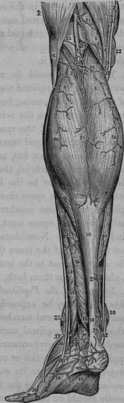

Ligature Of The Popliteal Artery
Description
This section is from the book "Anatomy Of The Arteries Of The Human Body", by John Hatch Power. Also available from Amazon: Anatomy of the Arteries of the Human Body, with the Descriptive Anatomy of the Heart.
Ligature Of The Popliteal Artery
In its superior third, this artery may be exposed by an incision on the external margin of the semi-membranosus muscle, closely applied to which is the popliteal nerve : the muscle being drawn inwards, and the nerve outwards, the vein will be found closely applied to the posterior or cutaneous surface of the artery, and projecting a little to its outside: great caution is therefore necessary in separating the vessels from one another, and the needle should be passed from without inwards.
The popliteal artery may he secured in its inferior third by a vertical incision between the heads of the gastrocnemius muscle. The posterior saphenous nerve and vein being drawn out of the way, the popliteal nerve will be brought into view: deeper and more externally is the vein, and still deeper and projecting on the outside of the vein is the artery. The nerve may be drawn to the inside, and the vein either internally or externally, as may be found most convenient. The needle is to be introduced with its convexity to the vein.
It is not advisable to apply a ligature on the popliteal artery in the middle of its course, on account of its great depth, the unyielding nature of its lateral boundaries, and its vein and nerve lying so directly over it.
Fig. 64. Represents the Superficial Arteries of the Ham and of the Posterior part of the Leg.
1, Vastus Externus. 2. 2. Tendon of the Sartorius. 3, 3, Tendon of the Gracilis. 4, The Semi-tendinosus. 5, The Semi-membranosus. 6. The Biceps Muscle. 7, The Plantaris. 8,8, The Gastrocnemius. 9. 9. The Soleus. 10, 10, The Tendo Achiilis. 11, The Long Flexor of the Toes. 12, Tendon of the Tibialis Posticus. 13, 13, Peroneus Longus. 14, 14, Peroneus Brevis. 15, 15, The Flexor Pollicis Longus. 16, Extensor Digitorum Brevis. 17. Peroneus Tertius. 18, Plantar Aponeurosis. 19. Adductor of the Little Toe. 20, Popliteal Artery. 21, 21, Muscular Branches from the Popliteal Artery. 22, Branch from Anastomotica Magna. 23, Superior External Articular Artery of Knee. 24, Superior Internal Articular Artery of Knee. 25, A Trunk sometimes common to the Inferior Muscular or Sural vessels of the calf. 26, 26, 26, 26, 26, Arteries of the calf. 27, Deep Muscular Twig. 28, 28, Posterior Tibial Artery. 29, Muscular Twig from Posterior Tibial Artery. 30, Branches from the Internal Malleolar Artery. 31, 31. Muscular Twigs from the Peroneal Artery. 32, The Posterior Peroneal Artery. 33, Twig from the preceding Artery. 34. Twig from the Posterior Tibial Artery. 35, Branch from the Anterior External Malleolar Artery. 36, External Dorsal Artery of little toe.
The branches of the popliteal artery within the space are the following:—
Superior Internal Articular. Inferior Internal Articular.
Superior External Articular. Inferior External Articular. Muscular branches. Azygos, or Middle Articular Artery, and the terminating branches, viz., Anterior Tibial. Posterior Tibial.
Continue to: